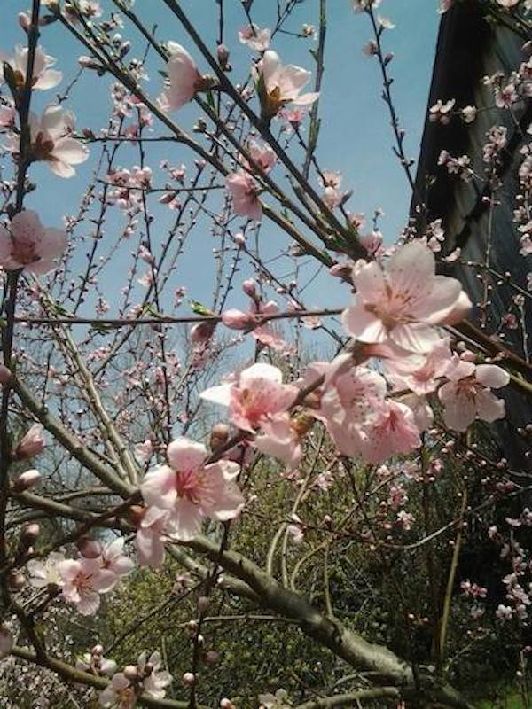

What Is Pruning and How Does It Work?
Fruit Tree Pruning involves the removal of parts of a fruit tree. But how exactly does this cause the tree to grow?
In the same way that getting a hair trim removes split ends and allow healthy hair to grow, pruning removes unhealthy wood and controls growth.
However, buds, shoots and leaves may also be removed to improve a tree's longevity.
Successful pruning of a young tree shapes the tree to be sturdy and less likely to break under the weight of crops or e.g. ice weighing down its branches.
As you will see in the illustrations below, correct pruning shapes the tree with a main trunk in the center and wide-angled limbs spaced around the central leader. The tree then grows into a pyramidal shape. On the other hand, incorrect pruning leads to a fruit tree becoming bushy and weak and the tree will produce very poor quality fruit.
Illustrations of Correct and Incorrect Pruning Techniques
As you can see below in the first slide, the correct pruning technique causes the sour cherry trees to grow in a healthy, pyramid shape. In the second slide, a long-neglected community apple orchard originally planted in England in the 1920s, shows branches that are a lot less sturdy.
How Pruning Works above